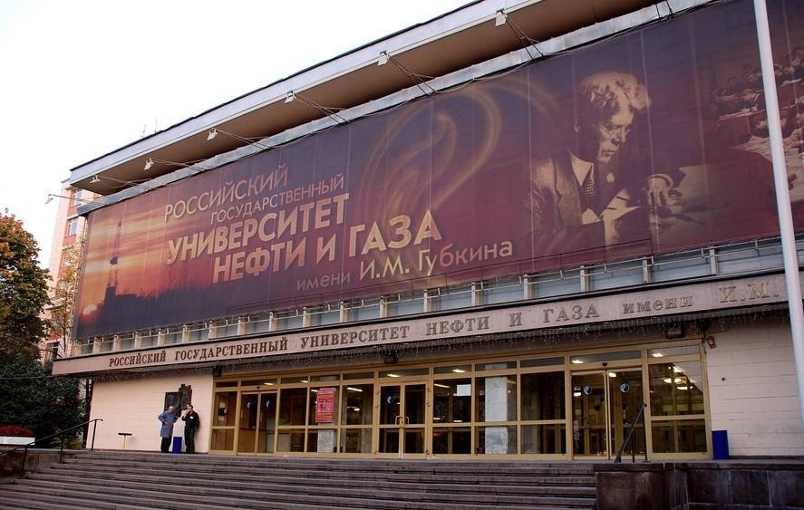

О себе
Меня зовут Кувшинов Роман Витальевич, я родился в Новороссийске — удивительном городе на побережье Черного моря. Мне очень повезло родится в этом прекрасном месте, так как моё детство было наполненно походами на море и в горы. В школьные годы я учился в престижной 20 гимназии Новороссийска, где мне довелось получить качественное образование и строить свои первые успехи.
Образование
Гимназия стала для меня настоящим вторым домом. Здесь я не только учился, но и находил новых друзей, участвовал в различных школьных мероприятиях и формировал свое представление о мире и образе жизни. В школе я проявил интерес к математике, физике и информатике, что послужило стимулом для моего дальнейшего выбора профессии.
После окончания гимназии я решил продолжить образование в Российском Государственном Университете нефти и газа имени И.М. Губкина. Этот вуз известен своими высокими стандартами образования в области нефтегазовой промышленности. Я поступил на факультет Автомитики и Вычислительной Техники (АиВТ), потому что мне всегда нравилось программирование и разные IT технологии. Конкретно я поступил на напривление Информатика и вычислительная техника.
Учеба в университете
Учеба в Губкинском университете стала для меня настоящим открытием. Здесь я получил доступ к современным знаниям и передовым технологиям, которые помогли мне расширить горизонты и глубже погрузиться в мир автоматизации и информационных технологий. Профессорский состав вуза — это настоящие профессионалы своего дела, которые не только преподают теорию, но и вдохновляют на практическое применение знаний.
Сейчас я завершаю первый курс университета, и это был насыщенный и продуктивный год. Я активно участвую в жизни студенческого сообщества, учусь новым технологиям программирования и делюсь своими знаниями с одногрупниками. Моя учеба в РГУНГ имени Губкина — это не просто получение диплома, а настоящее стремление к профессиональному росту и самореализации. Я уверен, что каждый день в университете приближает меня к моим целям и помогает строить будущую карьеру в сфере информационных технологий.
Хобби
В свободное время я увлекаюсь вязанием — это не только способ расслабиться, но и творческое выражение моей личности. Также я углубляюсь в программирование, изучаю новые языки и технологии, что позволяет мне постоянно развиваться и расти в профессиональном плане.